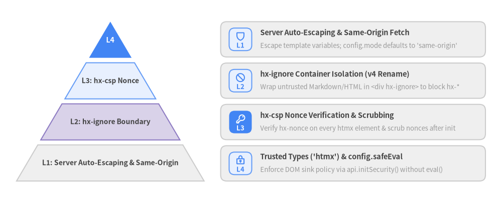
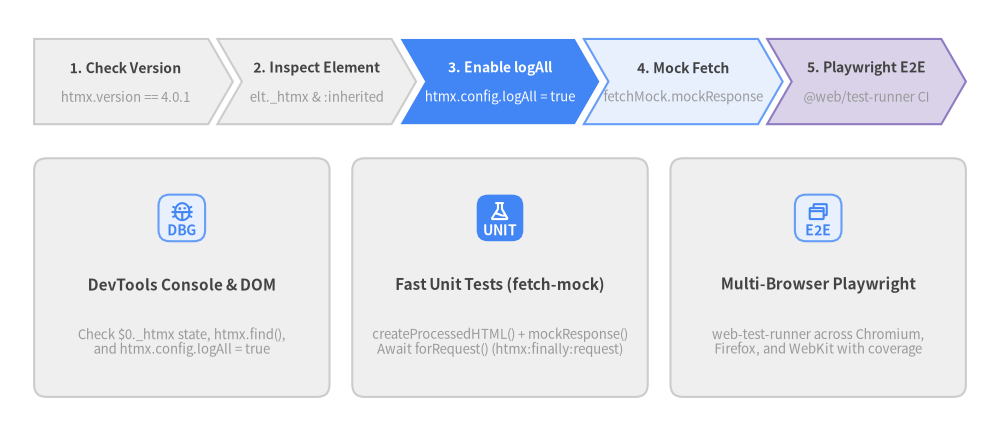

8. Security, Testing & Debugging
Because htmx inserts server-rendered HTML directly into the active document, production Hypermedia-Driven Applications require strict trust boundaries (hx-ignore), Content Security Policy enforcement (hx-csp & Trusted Types), systematic DevTools observability (logAll & elt._htmx), and automated browser testing (@web/test-runner, fetch-mock, Playwright).

Source Code
from drawlib.canvas import save, setup
from drawlib.icons import phosphor
from drawlib.smartarts import CardList, Pyramid
from drawlib.styles import Styles
setup(width=182, height=74)
# Left: 4-Tier Defense-in-Depth Pyramid
pyr = Pyramid(
style=Styles.Neutral,
text_style=Styles.DarkBold.patch(text_size=10.0),
)
pyr.add(
"L4",
style=Styles.PrimaryFlat,
text_style=Styles.WhiteBold.patch(text_size=10.5),
)
pyr.add("L3: hx-csp Nonce", style=Styles.PrimaryNeutral)
pyr.add("L2: hx-ignore Boundary", style=Styles.SecondaryNeutral)
pyr.add("L1: Server Auto-Escaping & Same-Origin", style=Styles.Neutral)
pyr.draw(xy=(6.0, 8.0), width=68.0, height=58.0, margin=1.8, direction="bottom", order="vertex_to_base")
# Right: Security Controls Breakdown Cards
cards = CardList(
style=Styles.Neutral,
text_style=Styles.DarkBold.patch(text_size=10.5),
description_style=Styles.Muted.patch(text_size=9.5),
badge_shape="rounded_rect",
badge_style=Styles.PrimaryNeutral,
badge_text_style=Styles.PrimaryBold.patch(text_size=9.5),
icon_style=Styles.PrimaryBold,
direction="vertical",
spacing=2.2,
)
cards.add(
"Server Auto-Escaping & Same-Origin Fetch",
"Escape template variables; config.mode defaults to 'same-origin'",
badge_text="L1",
icon=phosphor.shield,
)
cards.add(
"hx-ignore Container Isolation (v4 Rename)",
"Wrap untrusted Markdown/HTML in <div hx-ignore> to block hx-*",
badge_text="L2",
icon=phosphor.prohibit,
)
cards.add(
"hx-csp Nonce Verification & Scrubbing",
"Verify hx-nonce on every htmx element & scrub nonces after init",
badge_text="L3",
icon=phosphor.key,
badge_style=Styles.PrimaryFlat,
badge_text_style=Styles.WhiteBold.patch(text_size=9.5),
icon_style=Styles.WhiteBold,
)
cards.add(
"Trusted Types ('htmx') & config.safeEval",
"Enforce DOM sink policy via api.initSecurity() without eval()",
badge_text="L4",
icon=phosphor.lock_key,
)
cards.draw(xy=(80.0, 8.0), width=96.0, height=58.0, align="bottom_left")
save()
8.1 Hypermedia Security Boundaries & hx-ignore
In htmx, any element processed by the runtime can issue HTTP requests or execute inline handlers. Therefore, untrusted user-supplied content must never be allowed to inject active hx-* or data-hx-* attributes.
- Always Escape User Input on the Server: Use context-aware auto-escaping in your server templating engine (Jinja2, Go
html/template, ERB, Razor, etc.). - Fence User-Generated HTML with
hx-ignore: When rendering sanitized user HTML (such as rich-text comments or Markdown previews), wrap the container inhx-ignore. htmx v4.0.1 completely skips scanning the element and its entire subtree. - Locked Same-Origin Fetch Mode:
htmx.config.modedefaults to"same-origin"and cannot be overridden per-element viahx-config.
[!CAUTION] Remember the htmx 4 rename! In htmx 2,
hx-disablestopped htmx from processing a subtree. In htmx v4.0.1,hx-ignoreis the security boundary attribute that stops htmx processing, whereashx-disableonly sets the UIdisabledproperty on form controls during an active request.
<!-- Untrusted user comment body is fenced inside hx-ignore -->
<article class="comment-body" hx-ignore>
<!-- Even if a sanitizer allows an attribute through, htmx will never process it -->
<p>User comment content rendered here...</p>
</article>
8.2 Strict Content Security Policy (hx-csp & Trusted Types)
For high-security environments requiring a strict Content Security Policy (CSP) without 'unsafe-inline' or 'unsafe-eval', htmx v4.0.1 provides:
htmx.config.inlineScriptNonce: Attaches a cryptographic nonce to<script>tags inserted during swaps.- The Official
hx-csp.jsExtension (registers as: 'hx-csp'): Enforces three hardware-grade CSP layers viaapi.initSecurity(ttPolicy, syncFn, asyncFn):- Nonce Gating (
hx-nonce): Reads the page nonce fromdocument.querySelector('script[nonce]')?.nonce. Every htmx element must carry a matchinghx-nonce="<nonce>"attribute; otherwisehx-cspstrips allhx-*attributes and dispatcheshtmx:security:strip. On same-origin responses,hx-cspextracts the new response nonce from theContent-Security-Policyheader and rewrites it to the activepageNonce(while scrubbing any stolenpageNoncefrom raw response text). - Trusted Types (
trusted-types htmx): Registers a Trusted Types policy named'htmx'and fails closed if blocked by the browser CSP. - Safe Eval (
htmx.config.safeEval = true): ReplacesFunction/AsyncFunctionconstructors with cached, nonce-stamped<script>injection sohx-on:*,hx-vals="js:...", andhx-livework without'unsafe-eval'in your CSP header!
- Nonce Gating (
<!-- HTTP Header: Content-Security-Policy: script-src 'self' 'nonce-r4nd0m99'; require-trusted-types-for 'script'; trusted-types htmx; -->
<meta name="htmx-config" content='extensions:"hx-csp", safeEval:true'>
<script src="/dist/htmx.min.js" nonce="r4nd0m99"></script>
<script src="/dist/ext/hx-csp.min.js" nonce="r4nd0m99"></script>
<!-- Every htmx-powered element must carry hx-nonce matching the script nonce -->
<button hx-post="/account/rotate-key"
hx-nonce="r4nd0m99"
hx-target="#key-status"
hx-on:htmx:after:swap="console.log('Key rotated safely without unsafe-eval')">
Rotate API Key
</button>
8.3 Debugging Techniques (logAll, elt._htmx, Event Monitor)
When a request fails to fire or a swap behaves unexpectedly, walk through the htmx v4.0.1 diagnostic workflow:

Source Code
from drawlib.canvas import save, setup
from drawlib.icons import phosphor
from drawlib.smartarts import CardList, ChevronProcess
from drawlib.styles import Styles
setup(width=176, height=76)
# Top: 5-Stage Diagnostic & Verification Pipeline
pipeline = ChevronProcess(
style=Styles.Neutral,
text_style=Styles.DarkBold.patch(text_size=10.0),
description_style=Styles.Muted.patch(text_size=9.5),
corner_angle=60.0,
spacing=1.6,
flat_left_end=True,
)
pipeline.add("1. Check Version", description="htmx.version == 4.0.1")
pipeline.add("2. Inspect Element", description="elt._htmx & :inherited")
pipeline.add(
"3. Enable logAll",
description="htmx.config.logAll = true",
style=Styles.PrimaryFlat,
text_style=Styles.WhiteBold.patch(text_size=10.0),
description_style=Styles.White.patch(text_size=9.5),
)
pipeline.add("4. Mock Fetch", description="fetchMock.mockResponse", style=Styles.PrimaryNeutral)
pipeline.add("5. Playwright E2E", description="@web/test-runner CI", style=Styles.SecondaryNeutral)
pipeline.draw(xy=(6.0, 54.0), width=164.0, height=15.0)
# Bottom: 3 Horizontal Cards for DevTools & Test Harness
cards = CardList(
style=Styles.Neutral,
text_style=Styles.DarkBold.patch(text_size=11.0),
description_style=Styles.Muted.patch(text_size=9.5),
badge_shape="rounded_rect",
badge_style=Styles.PrimaryNeutral,
badge_text_style=Styles.PrimaryBold.patch(text_size=10.0),
icon_style=Styles.PrimaryBold,
direction="horizontal",
spacing=4.0,
)
cards.add(
"DevTools Console & DOM",
"Check $0._htmx state, htmx.find(),\nand htmx.config.logAll = true",
badge_text="DBG",
icon=phosphor.bug,
)
cards.add(
"Fast Unit Tests (fetch-mock)",
"createProcessedHTML() + mockResponse()\nAwait forRequest() (htmx:finally:request)",
badge_text="UNIT",
icon=phosphor.flask,
badge_style=Styles.PrimaryFlat,
badge_text_style=Styles.WhiteBold.patch(text_size=10.0),
icon_style=Styles.WhiteBold,
)
cards.add(
"Multi-Browser Playwright",
"web-test-runner across Chromium,\nFirefox, and WebKit with coverage",
badge_text="E2E",
icon=phosphor.browsers,
)
cards.draw(xy=(6.0, 6.0), width=164.0, height=42.0, align="bottom_left")
save()
Essential Browser Console Diagnostic Snippets
// 1. Enable verbose logging of every colon-separated htmx:* event
htmx.config.logAll = true;
// 2. Verify that htmx has initialized an element (selected as $0 in DevTools Elements panel)
console.log($0._htmx);
// 3. Attach a concise lifecycle tracer for all requests and swaps
[
'htmx:config:request',
'htmx:before:request',
'htmx:after:request',
'htmx:before:swap',
'htmx:after:swap',
'htmx:response:error',
'htmx:error',
'htmx:finally:request'
].forEach((evtName) => {
document.body.addEventListener(evtName, (e) => {
console.log(
`[htmx] ${evtName}`,
e.detail?.ctx?.request?.action,
e.detail?.ctx?.response?.status,
e.detail
);
});
});
8.4 Automated Testing of htmx UIs (@web/test-runner, fetch-mock, Playwright)
Because htmx v4.0.1 uses standard window.fetch(), testing hypermedia interactions in real headless browsers (Chromium, Firefox, WebKit) via @web/test-runner and @web/test-runner-playwright is fast and deterministic:
# Run the full test suite in headless Chromium via Playwright
npm test
# Run across Chromium, Firefox, and WebKit
npm run test:all
Writing Deterministic Hypermedia Tests with fetch-mock
Use createProcessedHTML() to mount and initialize a fragment in #test-playground, register a mocked HTML response with mockResponse(), trigger the DOM action, and await forRequest() (which resolves on htmx:finally:request):
describe('htmx v4.0.1 status routing and <hx-partial> swaps', () => {
afterEach(() => {
cleanupTest(); // Cleans #test-playground and resets fetchMock
});
it('routes HTTP 422 validation errors via hx-status:422 and updates partials', async () => {
mockResponse(
'POST',
'/users',
`<span class="field-error">Email already registered</span>
<hx-partial hx-target="#status-badge" hx-swap="textContent">Error</hx-partial>`,
{ status: 422 }
);
const container = createProcessedHTML(`
<div>
<span id="status-badge">Idle</span>
<form hx-post="/users"
hx-target="#main-out"
hx-status:422="target:#err-out swap:innerHTML">
<input name="email" value="taken@example.com">
<button id="submit-btn" type="submit">Save</button>
</form>
<div id="main-out"></div>
<div id="err-out"></div>
</div>
`);
const reqDone = forRequest();
find('#submit-btn').click();
await reqDone;
assertTextContentIs('#err-out', 'Email already registered');
assertTextContentIs('#status-badge', 'Error');
assertTextContentIs('#main-out', '');
});
});